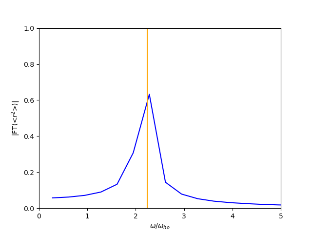

- Author
- Santo Maria Roccuzzo (santo.nosp@m.m.ro.nosp@m.ccuzz.nosp@m.o@gm.nosp@m.ail.c.nosp@m.om)
A three-dimensional Bose gas in a harmonic trap.
Introduction
In the first example, we are going to use UltraCold to study the ground state and a simple dynamics of a three-dimensional, harmonically trapped Bose gas of Rubidium atoms, using the solver class UltraCold::GPSolvers::GPSolver, or, better, extending this class for customizing the runtime behavior of real-time simulations. All the solver classes delivered with UltraCold can, in fact, be partially extended according to possible different needs, in particular for customizing the output of dynamic simulations or adding time-dependent terms to the Hamiltonian of the system to simulate, e.g., a ramp in the scattering length.
We will, in particular, solve the Gross-Pitaevskii equation on a three-dimensional, homogeneous mesh, calculating first the ground state of the system in the presence of an isotropic harmonic trap, using the member function run_gradient_descent, and then running a real-time dynamic simulation of an experiment for the measurement of the frequency of the so-called breathing mode, using the member function run_operator_splitting. The frequency of this collective oscillation can be calculated analytically in the Thomas-Fermi approximation, and is equal to \( \omega_{breathing}=\sqrt{5}\omega_{ho}\). The breathing oscillation can be excited, for example, via a sudden isotropic shrinking of the harmonic trap. For the sake of illustration, however, we will use another procedure, namely a linear ramp in the scattering length, with a fixed time duration. This procedure, being isotropic in space, will still excite only the breathing mode we are interested in. It will also give us the opportunity to show how to derive a class from the base class GPSolver in order to introduce a time-dependent term in the Hamiltonian.
So, let's start from the Gross-Pitaevskii equation in three space dimensions, in the presence of an external harmonic potential
\[
i\hbar\frac{\partial \psi(x,y,z,t)}{\partial t} =
\left[
\frac{-\hbar^2\nabla^2}{2m}+\frac{1}{2}m(\omega^2_x x^2+\omega^2_y y^2 +\omega_z^2 z^2)
+ \frac{4\pi a\hbar^2}{m}|\psi(x,y,z,t)|^2
\right]\psi(x,y,z,t)
\]
Measuring frequencies in units of the average harmonic frequency \( \omega_{ho} = (\omega_x\omega_y\omega_z)^{\frac{1}{3}} \), lengths in units of the harmonic oscillator length \( a_{ho} = \sqrt{\frac{\hbar}{m\omega_{ho}}} \), and times in units of \( \omega_{ho}^{-1} \), the equation can be recast in a-dimensional form as
\[
i\frac{\partial \psi(x,y,z,t)}{\partial t} =
\left[
\frac{-\nabla^2}{2}+\frac{1}{2}(\omega_x^2 x^2+\omega^2_y y^2+\omega_z^2 z^2)
+ 4\pi a |\psi(x,y,z,t)|^2
\right]\psi(x,y,z,t)
\]
We will now see how to solve this equation for our needs using tools provided by UltraCold.
Program description
We first create an input file containing our mesh and physical parameters, as well as other parameters determining the run-time behavior of the system. Such input file will be called example-1.prm and contains the following text
# Mesh parameters
xmax = 10.0 # Size of the mesh along the x-axis, in micrometers. The mesh will extend from -xmax to xmax
ymax = 10.0 # Size of the mesh along the y-axis, in micrometers. The mesh will extend from -ymax to ymax
zmax = 10.0 # Size of the mesh along the z-axis, in micrometers. The mesh will extend from -zmax to zmax
nx = 64 # Number of points along the x-axis
ny = 64 # Number of points along the y-axis
nz = 64 # Number of points along the z-axis
# Physical parameters
initial scattering length = 100.9 # Initial scattering length in units of the Bohr radius
number of particles = 40000 # Total number of atoms
atomic mass = 87 # Atomic mass, in atomic mass units
omegax = 100 # Harmonic frequency along the x-axis, in units of (2pi)Hz
omegay = 100 # Harmonic frequency along the y-axis, in units of (2pi)Hz
omegaz = 100 # Harmonic frequency along the z-axis, in units of (2pi)Hz
# Run parameters for gradient descent
number of gradient descent steps = 10000 # maximum number of gradient descent steps
residual = 1.E-8 # Threshold on the norm of the residual
alpha = 1.E-4 # gradient descent step
beta = 0.9 # step for the heavy-ball acceleration method
# Run parameters for real-time dynamics
number of real time steps = 50000 # Total number of time-steps for real time dynamics
time step = 0.001 # Time step for real-time dynamics, in milliseconds
final scattering length = 90.0 # Final scattering length in units of the Bohr radius
ramp duration = 20.0 # Duration of the ramp of the scattering length, in milliseconds
We will see shortly how to read this file inside our main() function, using the class UltraCold::Tools::InputParser.
Let's take a look at the source code contained in the file /examples/example-1/example-1.cpp.
The first line includes the header file "UltraCold.hpp", which allows to import all the interfaces to classes and functions available in the library.
The second line imports the namespace UltraCold, which wraps all the namespaces available in the library.
All the classes and functions necessary to work with UltraCold.
Definition: BogolyubovSolver.cpp:25
As said, we will solve the Gross-Pitaevskii equation using a class derived from the UltraCold::GPSolvers::GPSolver class, which uses, under the hood, functions from Intel's Math Kernel Library to perform some mathematical operations, in particular dynamic allocation of data arrays and Fast Fourier Transforms. In the derived solver class, it is possible, among other things, to override the member functions run_operator_splitting(...), which solves the Gross-Pitaevskii equation using operator splitting, solve_step_1_operator_splitting(...), which solves the first step in the operator splitting method and allows to add time-dependent terms in the Hamiltonian, and write_operator_splitting_output(...), which writes the output during dynamic simulations. So, let's define a custom myGPSolver class, inheriting from UltraCold::GPSolvers::GPSolver, and overriding the member functions described above:
{
public:
using GPSolver::GPSolver;
void run_operator_splitting(int number_of_time_steps,
double time_step,
double ramp_duration,
double initial_scattering_length,
double final_scattering_length,
std::ostream& output_stream) override;
double current_scattering_length,
std::ostream& output_stream) override;
protected:
};
Class to solve the Gross-Pitaevskii equation.
Definition: GPSolvers.hpp:161
virtual void solve_step_1_operator_splitting()
Solve step-1 of operator splitting.
Definition: GPSolver.cpp:575
Definition: example-1.cpp:30
void write_operator_splitting_output(size_t iteration_number, double current_scattering_length, std::ostream &output_stream) override
Useful possible overload.
Definition: example-1.cpp:114
First, we override run_operator_splitting(...) in such a way that it takes, as arguments, the duration of the ramp in the scattering length, as well as the values of the initial and final scattering lengths. The function will also perform a linear ramp in the scattering length during the real-time evolution of the system. Notice that the operator splitting procedure is here explicitly implemented, with the laplacian calculated using the Fast Fourier Transform routines from the Intel's Math Kernel Library, wrapped in the class MKLWrappers::DFtCalculator:
void myGPSolver::run_operator_splitting(int number_of_time_steps,
double time_step,
double ramp_duration,
double initial_scattering_length,
double final_scattering_length,
std::ostream &output_stream)
{
this->time_step = time_step;
double current_scattering_length=initial_scattering_length;
double current_time=0;
for (size_t iteration_number = 0; iteration_number < number_of_time_steps; ++iteration_number)
{
current_scattering_length,
output_stream);
current_time = iteration_number*time_step;
if(current_time <= ramp_duration)
{
std::cout << current_scattering_length*20361.7<< std::endl;
current_scattering_length = initial_scattering_length
+ (final_scattering_length-initial_scattering_length) * current_time/ramp_duration;
}
}
}
void solve_step_2_operator_splitting(MKLWrappers::DFtCalculator &)
Solve step-2 of operator splitting.
Definition: GPSolver.cpp:615
Class to calculate Fourier transforms using Intel's MKL DFT functions.
Definition: DFtCalculator.hpp:60
Then, we also override the member function that solves the first step of the operator-splitting method in such a way that it uses the current value of the scattering length. Since we like to go fast, we also add a simple pre-processor directive instructing the compiler to parallelize the loop using OpenMP:
{
#pragma omp parallel for
for (
size_t i = 0; i < psi.
size(); ++i)
psi(i) *= std::exp(-ci*time_step*(Vext(i)+ 4*PI*current_scattering_length*std::norm(psi(i))));
}
int size()
Get the total number of elements.
Definition: Vector.cpp:260
Finally, we override the member function that writes the output of the real-time simulation, in such a way that it will calculate the root mean-squared radius of the atomic cloud every hundred time steps, writing it to the output stream together with the current time. Once again, since we like to go fast, we add a #pragma to parallelize the triple loop using OpenMP. Notice that both the time and the root mean squared radius will be in harmonic units:
double current_scattering_length,
std::ostream &output_stream)
{
if(iteration_number % 100 == 0)
{
double r2m = 0.0;
double norm = 0.0;
#pragma omp parallel for reduction(+: r2m,norm) collapse(3)
for (
size_t i = 0; i < psi.
extent(0); ++i)
for(
size_t j = 0; j < psi.
extent(1); ++j)
for (
size_t k = 0; k < psi.
extent(2); ++k)
{
r2m += (std::pow(x[i],2)+std::pow(y[j],2)+std::pow(z[k],2))*std::norm(psi(i,j,k));
norm += std::norm(psi(i,j,k));
}
r2m = std::sqrt(r2m/norm);
output_stream << iteration_number*time_step << " " << current_scattering_length << " " << r2m << std::endl;
}
}
int extent(int)
Get the extent of the Vector along a certain direction.
Definition: Vector.cpp:285
Now, we can define our main function.
The first thing that main does is to define an object ot type UltraCold::Tools::InputParser, which allows to read the parameters defined in the file example-1.prm as follows:
ip.read_input_file();
double xmax = ip.retrieve_double("xmax");
double ymax = ip.retrieve_double("ymax");
double zmax = ip.retrieve_double("zmax");
const int nx = ip.retrieve_int("nx");
const int ny = ip.retrieve_int("ny");
const int nz = ip.retrieve_int("nz");
double initial_scattering_length = ip.retrieve_double("initial scattering length");
const int number_of_particles = ip.retrieve_int("number of particles");
const double atomic_mass = ip.retrieve_double("atomic mass");
double omegax = ip.retrieve_double("omegax");
double omegay = ip.retrieve_double("omegay");
double omegaz = ip.retrieve_double("omegaz");
const int number_of_gradient_descent_steps = ip.retrieve_int("number of gradient descent steps");
const double residual = ip.retrieve_double("residual");
const double alpha = ip.retrieve_double("alpha");
const double beta = ip.retrieve_double("beta");
const int number_of_real_time_steps = ip.retrieve_int("number of real time steps");
double time_step = ip.retrieve_double("time step");
double final_scattering_length = ip.retrieve_double("final scattering length");
double ramp_duration = ip.retrieve_double("ramp duration");
Since it is very useful for comparison with typical scales used in experiments, in the input we gave lengths in micrometers, the scattering length in units of the Bohr radius, the time-step in milliseconds, and the atomic mass in atomic mass units. It is time to convert these parameters into harmonic units, in order to map them to an a-dimensional Gross-Pitaevskii equation:
const double hbar = 0.6347*1.E5;
const double bohr_radius = 5.292E-5;
omegax *= TWOPI;
omegay *= TWOPI;
omegaz *= TWOPI;
const double omega_ho = std::cbrt(omegax*omegay*omegaz);
time_step = time_step*omega_ho/1000.0;
ramp_duration = ramp_duration*omega_ho/1000.0;
omegax = omegax/omega_ho;
omegay = omegay/omega_ho;
omegaz = omegaz/omega_ho;
const double a_ho = std::sqrt(hbar/(atomic_mass*omega_ho));
initial_scattering_length *= bohr_radius/a_ho;
final_scattering_length *= bohr_radius/a_ho;
xmax = xmax/a_ho;
ymax = ymax/a_ho;
zmax = zmax/a_ho;
We can now define the three-dimensional mesh on which the equation will be solved
double dx = 2.*xmax/nx;
double dy = 2.*ymax/ny;
double dz = 2.*zmax/nz;
for (size_t i = 0; i < nx; ++i) x(i) = -xmax + i*dx;
for (size_t i = 0; i < ny; ++i) y(i) = -ymax + i*dy;
for (size_t i = 0; i < nz; ++i) z(i) = -zmax + i*dz;
double dv = dx*dy*dz;
Next, we define an initial wave function, normalized to the total number of particles, and the external potential
for (size_t i = 0; i < nx; ++i)
for (size_t j = 0; j < ny; ++j)
for (size_t k = 0; k < nz; ++k)
{
psi(i,j,k) = exp(- (pow(x(i),2) +
pow(y(j),2) +
pow(z(k),2)) );
Vext(i,j,k) = 0.5*( std::pow(omegax,2)*pow(x(i),2) +
std::pow(omegay,2)*pow(y(j),2) +
std::pow(omegaz,2)*pow(z(k),2) );
}
double norm = 0.0;
for (size_t i = 0; i < psi.size(); ++i) norm += std::norm(psi[i]);
norm *= dv;
for (size_t i = 0; i < psi.size(); ++i) psi[i] *= std::sqrt(number_of_particles/norm);
Finally, we initialize the myGPSolver class, and run the run_gradient_descent(...) member function in order to calculate a ground state solution on the defined mesh and for this external potential and physical parameters:
myGPSolver gp_solver(x,y,z,psi,Vext,initial_scattering_length);
std::fstream gradient_descent_output_stream;
gradient_descent_output_stream.open("gradient_descent_output.csv",std::ios::out);
double chemical_potential;
std::tie(psi,chemical_potential) = gp_solver.run_gradient_descent(number_of_gradient_descent_steps,
residual,
alpha,
beta,
gradient_descent_output_stream);
gradient_descent_output_stream.close();
We write our ground state solution to a .vtk file, that can be read for plotting using programs like Paraview or Visit, using the class UltraCold::GraphicOutput::DataWriter:
A class to output a data Vector in real space.
Definition: DataWriter.hpp:71
void set_output_name(const std::string &output_file_name)
Set the name for the output data file, input as an std::string.
Definition: DataWriter.cpp:31
void write_vtk(Vector< double > &x_axis, Vector< double > &y_axis, Vector< double > &real_output_vector, const char *vector_name, const char *format)
Write an output data file in .vtk format, for real 2D output.
Definition: DataWriter.cpp:805
Finally, we re-initialize the solver, using as initial condition the ground state solution just calculated and run the dynamic simulation
gp_solver.reinit(Vext,psi);
std::fstream output_file_stream;
output_file_stream.open("real_time_output.csv",std::ios::out);
gp_solver.run_operator_splitting(number_of_real_time_steps,
time_step,
ramp_duration,
initial_scattering_length,
final_scattering_length,
output_file_stream);
output_file_stream.close();
return 0;
}
Results
The ground state density profile can be visualized by opening the output file ground_state_wave_function.vtk, where we saved the mesh as well as the real and the imaginary part of the calculated ground-state wave function. Using, for example, Paraview , a typical output can look like the following
More interesting is the output of the real-time simulation dynamics. In fact, the value of squared mean radius of the cloud shows, as expected, a first decrease during the ramp, followed by a nice and simple harmonic oscillation:
The frequency of such harmonic oscillation can be extracted by a simple Fourier transform. The output looks like the following:

In this image, we also report the value of the frequency of the breathing mode calculated analytically, and corresponding, for this case, to \( \sqrt{5}\omega_{ho} \). Such frequency is reported in the orange vertical line, and, as we can see, corresponds very well with the one extracted from the real time simulation.
Possible extensions
This program can be used as a template for studying the ground state and the dynamics of a simple BEC in different meshes and external potentials, or by exciting different collective oscillations, as e.g. the quadrupole mode.
The plain program
#include "UltraCold.hpp"
{
public:
using GPSolver::GPSolver;
void run_operator_splitting(int number_of_time_steps,
double time_step,
double ramp_duration,
double initial_scattering_length,
double final_scattering_length,
std::ostream& output_stream) override;
double current_scattering_length,
std::ostream& output_stream) override;
protected:
};
void myGPSolver::run_operator_splitting(int number_of_time_steps,
double time_step,
double ramp_duration,
double initial_scattering_length,
double final_scattering_length,
std::ostream &output_stream)
{
this->time_step = time_step;
double current_scattering_length=initial_scattering_length;
double current_time=0;
for (size_t iteration_number = 0; iteration_number < number_of_time_steps; ++iteration_number)
{
current_scattering_length,
output_stream);
current_time = iteration_number*time_step;
if(current_time <= ramp_duration)
{
current_scattering_length = initial_scattering_length
+ (final_scattering_length-initial_scattering_length) * current_time/ramp_duration;
}
}
}
{
#pragma omp parallel for
for (
size_t i = 0; i < psi.
size(); ++i)
psi(i) *= std::exp(-ci*time_step*(Vext(i)+ 4*PI*current_scattering_length*std::norm(psi(i))));
}
double current_scattering_length,
std::ostream &output_stream)
{
if(iteration_number % 100 == 0)
{
double r2m = 0.0;
double norm = 0.0;
#pragma omp parallel for reduction(+: r2m,norm) collapse(3)
for (
size_t i = 0; i < psi.
extent(0); ++i)
for(
size_t j = 0; j < psi.
extent(1); ++j)
for (
size_t k = 0; k < psi.
extent(2); ++k)
{
r2m += (std::pow(x[i],2)+std::pow(y[j],2)+std::pow(z[k],2))*std::norm(psi(i,j,k));
norm += std::norm(psi(i,j,k));
}
r2m = std::sqrt(r2m/norm);
output_stream << iteration_number*time_step << " " << current_scattering_length << " " << r2m << std::endl;
}
}
int main() {
ip.read_input_file();
double xmax = ip.retrieve_double("xmax");
double ymax = ip.retrieve_double("ymax");
double zmax = ip.retrieve_double("zmax");
const int nx = ip.retrieve_int("nx");
const int ny = ip.retrieve_int("ny");
const int nz = ip.retrieve_int("nz");
double initial_scattering_length = ip.retrieve_double("initial scattering length");
const int number_of_particles = ip.retrieve_int("number of particles");
const double atomic_mass = ip.retrieve_double("atomic mass");
double omegax = ip.retrieve_double("omegax");
double omegay = ip.retrieve_double("omegay");
double omegaz = ip.retrieve_double("omegaz");
const int number_of_gradient_descent_steps = ip.retrieve_int("number of gradient descent steps");
const double residual = ip.retrieve_double("residual");
const double alpha = ip.retrieve_double("alpha");
const double beta = ip.retrieve_double("beta");
const int number_of_real_time_steps = ip.retrieve_int("number of real time steps");
double time_step = ip.retrieve_double("time step");
double final_scattering_length = ip.retrieve_double("final scattering length");
double ramp_duration = ip.retrieve_double("ramp duration");
const double hbar = 0.6347*1.E5;
const double bohr_radius = 5.292E-5;
omegax *= TWOPI;
omegay *= TWOPI;
omegaz *= TWOPI;
const double omega_ho = std::cbrt(omegax*omegay*omegaz);
time_step = time_step*omega_ho/1000.0;
ramp_duration = ramp_duration*omega_ho/1000.0;
omegax = omegax/omega_ho;
omegay = omegay/omega_ho;
omegaz = omegaz/omega_ho;
const double a_ho = std::sqrt(hbar/(atomic_mass*omega_ho));
initial_scattering_length *= bohr_radius/a_ho;
final_scattering_length *= bohr_radius/a_ho;
xmax = xmax/a_ho;
ymax = ymax/a_ho;
zmax = zmax/a_ho;
double dx = 2.*xmax/nx;
double dy = 2.*ymax/ny;
double dz = 2.*zmax/nz;
for (size_t i = 0; i < nx; ++i) x(i) = -xmax + i*dx;
for (size_t i = 0; i < ny; ++i) y(i) = -ymax + i*dy;
for (size_t i = 0; i < nz; ++i) z(i) = -zmax + i*dz;
double dv = dx*dy*dz;
for (size_t i = 0; i < nx; ++i)
for (size_t j = 0; j < ny; ++j)
for (size_t k = 0; k < nz; ++k)
{
psi(i,j,k) = exp(- (pow(x(i),2) +
pow(y(j),2) +
pow(z(k),2)) );
Vext(i,j,k) = 0.5*( std::pow(omegax,2)*pow(x(i),2) +
std::pow(omegay,2)*pow(y(j),2) +
std::pow(omegaz,2)*pow(z(k),2) );
}
double norm = 0.0;
for (size_t i = 0; i < psi.size(); ++i) norm += std::norm(psi[i]);
norm *= dv;
for (size_t i = 0; i < psi.size(); ++i) psi[i] *= std::sqrt(number_of_particles/norm);
myGPSolver gp_solver(x,y,z,psi,Vext,initial_scattering_length);
std::fstream gradient_descent_output_stream;
gradient_descent_output_stream.open("gradient_descent_output.csv",std::ios::out);
double chemical_potential;
std::tie(psi,chemical_potential) = gp_solver.run_gradient_descent(number_of_gradient_descent_steps,
residual,
alpha,
beta,
gradient_descent_output_stream);
gradient_descent_output_stream.close();
gp_solver.reinit(Vext,psi);
std::fstream output_file_stream;
output_file_stream.open("real_time_output.csv",std::ios::out);
gp_solver.run_operator_splitting(number_of_real_time_steps,
time_step,
ramp_duration,
initial_scattering_length,
final_scattering_length,
output_file_stream);
output_file_stream.close();
return 0;
}